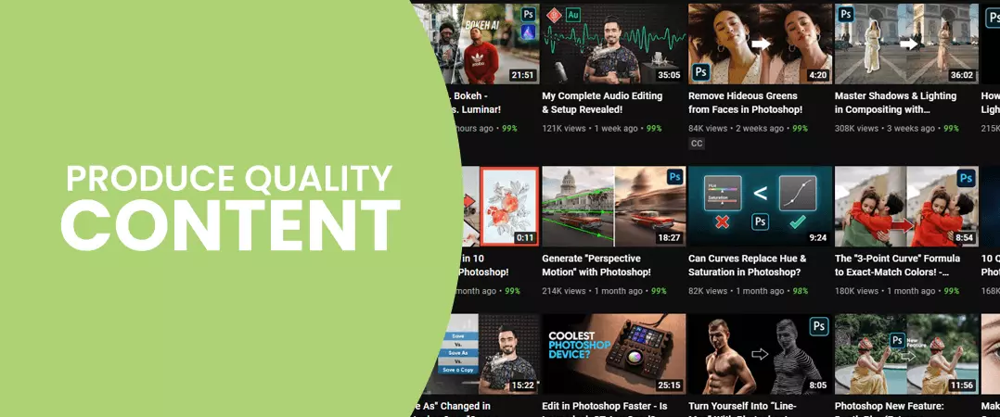
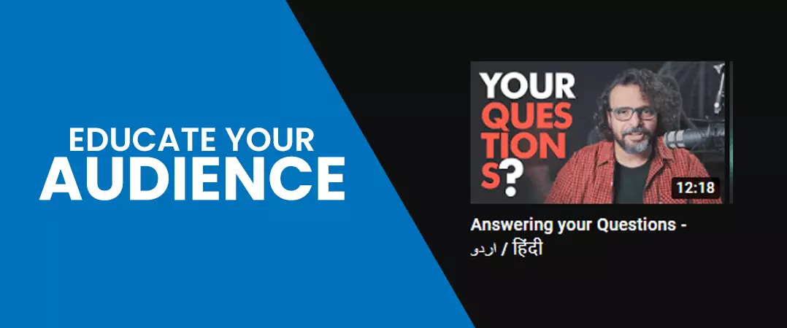
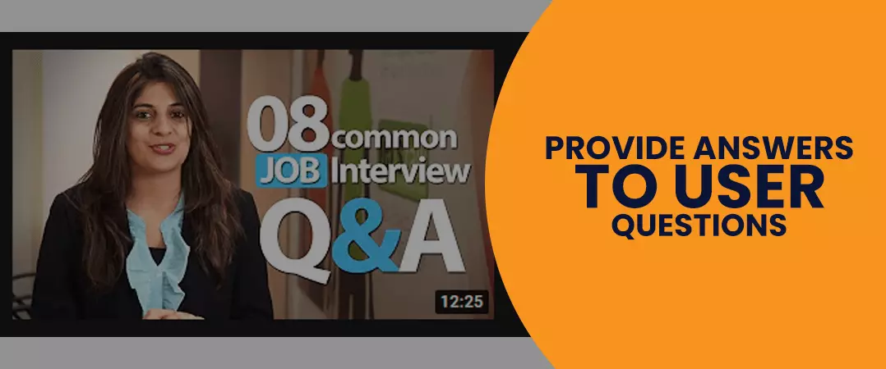
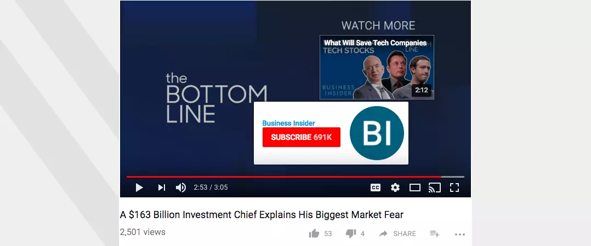
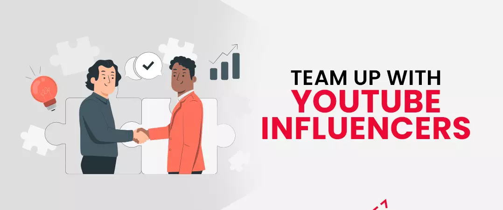
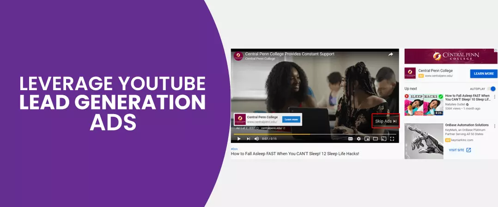
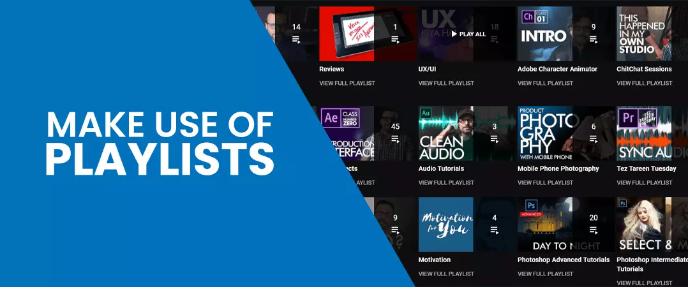
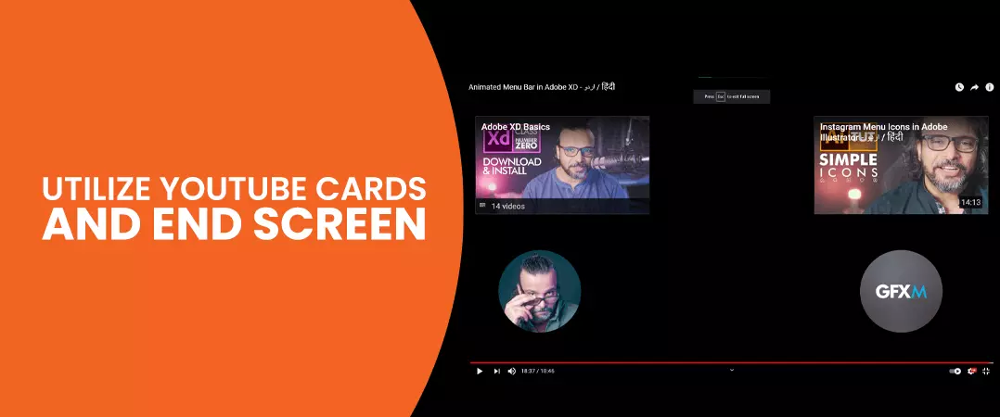

YouTube is a favourite means of pastime for many users. Some come for entertainment, whereas others for gaining information. If used right, YT can be a powerful tool to share your collective knowledge with your target audience. Presently, there is no other video viewing platform that can compete with YT on equal footing.
Businesses actively look for ways to get their products and services in front of more targeted consumers. To make the most of YouTube's inherent potential, many creators and brands decide to buy YouTube subscribers for their channel to move towards higher growth.
Like many others, you can use YouTube for lead generation. The platform is the second most visited search engine and second most popular social media network – not far behind Google and Facebook, respectively.
In this article, we will look at ways that can help us generate more leads on YouTube. So, without wasting any more time, let’s dive in.
Contents
Optimize Your Videos for Search
Just like Google, YT also is a search engine. Hence, it shares similarities in how it ranks content on its platform. YouTube SEO is not much different from its blog and website counterpart – the goal is to create videos and optimize them to show up in search results for your viewer's relevant search queries.
When you start as a YouTuber, you do not have much credibility under your belt for users to specifically search for your content. Therefore, you must put efforts into YT SEO and rank your videos for keywords/phrases for video lead generation.
Start your YT SEO by discovering your primary keyword via keyword research.
Once you do that, next, you have to optimize your content with the primary keyword in your video:
- title
- description
- tags
- captions and transcripts
You can find the complete guide on YouTube SEO here.
Produce Quality Content

"Content is King" - this phrase holds solid ground on platforms like YT as well. To fasten your YouTube lead generation process, you need to make your videos stand out from the rest.
How can I do that, you ask? - before you start working on your videos, remember to follow these three rules.
1. Educate Your Audience

Most users depend on YT to find solutions to their queries - this is evident from how "how- to" videos are searched more than even music or gaming content.
If you are a brand, you can use YT to demonstrate the workings of your products or services and highlight the benefits of the purchase. The same goes for individual creators who can build a strong community by providing information viewers need. For example, if you are a graphic designer, you can create videos demonstrating your designing expertise to those who seek the knowledge.
2. Provide Answers to User Questions

You can use the auto-suggest feature of YT to uncover search queries of your target audience. Your viewers are looking for answers, and it should be your job to be the provider. For example, people who purchase your products often need more information about the same. You can create videos to demonstrate the working of the product, thus making it easier for your viewers to understand.
3. Insert a Solid Call to Action

What is it that you want your viewers to do? Do you want them to come to your website and make a purchase? Do you want them to sign up as your lead? Or perhaps you want them to subscribe to your channel. Whatever your objective may be, you must make it known to your audience in the video.
How can you compel your viewers to take your desired action? – You can use the last few minutes of your video to ask your audience to subscribe to your channel or visit your website for more information. Do not forget to use cards and end screens to direct viewers to your playlist or external digital resources.
Your video title and description are also good places to insert call-to-action .
Team Up with YouTube Influencers

Collaborating with popular Influencers within your niche is recommended for YouTube lead generation.
This method takes time to find the right influencer and convince them to promote you to your target audience on their channel. 92% of users trust their influences more than any form of advertisement. YouTube is the second most important platform for influencer marketing, not far behind Instagram. Hence you cannot afford to NOT capitalize on the medium's potential.
Suppose their trusted influencer promotes your product or services. The consumers will start looking at your brand through a positive lens and would not doubt the credibility of your offerings.
Legit influencers boast high engagement rates. A fruitful partnership with them can direct novel eyes towards your brand - people who would go on without ever knowing you exist, if not for your influencer.
There are other ways to get more engagement in your videos. You can buy YouTube likes .
Do you have to find someone with a huge following? – No. An influencer with a small but highly loyal audience base will do wonders for your marketing endeavours.
Leverage YouTube Lead Generation Ads

Next, we have YT ads - using them is another recommended way for increased YouTube lead generation.
You have wide varieties to choose from, such as:
- Bumper ads
- Skippable video ads
- Non-skippable video ads
- Sponsored posts
- Overlay ads
- Display ads
Learn more about YouTube ads.
You can structure your ads to show them to the right audience. You can target users based on their behaviour, age and gender, location, keywords, the videos they watch, the channels/websites they visit etc. You also have the option to retarget people that have already interacted with you.
YT also has analytics that helps you gauge the performance of your ads. With the insights you receive, you can tweak your ads for more desired results. For example, if you get more YT leads from the United States, you can spend more of your budget targeting users in that country.
Make Use of Playlists

You can use the playlist feature on YT to organize and bring together related videos on your channel, which helps users find more of your content that interests them.
You don't have to worry about creating a playlist in the initial stages of your channel. But when videos start piling up, there is an increased need to group relevant videos – this is the time when a playlist comes in handy.
Playlists help your content get indexed more than once - first, as a single video and another time as part of a playlist. Now your videos can potentially reach a more significant number of viewers.
Playlists also keep visitors on your channel for a longer time - this is because they don't feel the need to watch videos from another channel to find everything, they need on yours.
Besides boosting engagement levels on your channel, videos in your playlists also effectively bring in more YouTube leads by showing users that your channel is an authority on the subject.
You can buy YouTube comments as an alternative to boost engagement.
Utilize YouTube Cards and End Screen

Are you looking for more ways for video lead generation? - Here are some for you.
Throughout your video, YouTube cards show up as icons at the top right corner of your display. Your viewers are required to click the icon. Once clicked, a drop-down window opens up, revealing more videos, playlists from your channel. Remember, the probability of your audience clicking on the icon increases when your cards show up at the right points in your video.
Next, you have the end screen, and just like the name suggests, this feature enables you to close your videos with a solid call-to-action.
End screens are just like cards, but you can use them to -
- Direct your visitors to an external website landing page.
- Promote your other channels.
- Ask the audience to sign up for your newsletter.
- Promote your social media handles.
To Sum Up
YT has been a dominant force in the past and will continue to be in the foreseeable future. If you are not yet capitalizing on the platform's full potential, then it is high time you change your priorities.
You can use the tips we have listed in this article for YT leads generation and bring benefits to your business in the form of higher sales and revenue.
We hope the time you spent reading our article on “Top 6 Ways to Generate Leads on YouTube” brought you additional value. Do read more content on our website.
How do you collect YouTube leads?
Feel free to share